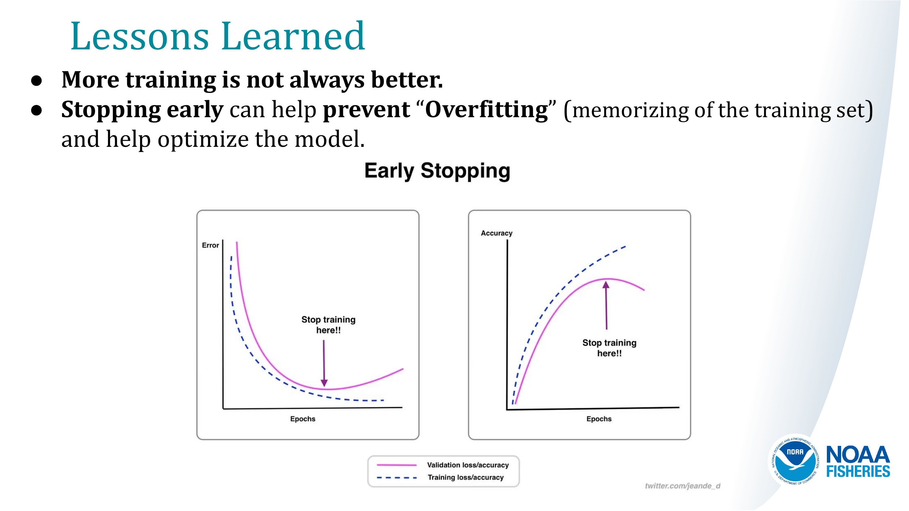

26. Model Evaluation#
26.1. When Evaluating Models, Remember:#
“All models are wrong, some are useful.”
— George Box (bio)
26.2. Key Lessons:#
Don’t sweat initial model performance. No model is perfect and early models are rarely even close. But they can still provide value and improve with iteration. Focus on good data, correct labels, and an iterative improvement process.
Confidence scores indicate how certain a model is about its predictions. Lower confidence may require further training and tuning.
Even imperfect models can assist in data gathering, hypothesis testing, and guiding further research.
Human-in-the-loop approaches can improve model performance by refining labels and reducing errors over time.
Models should be seen as tools to support decision-making, not as absolute truth.
Model predictions should complement, not replace, expert human validation.
Always evaluate a model’s limitations, biases, and real-world applicability.



27. Explanation of Training Results#
27.1. 1. Training Loss Metrics#
Each epoch reports three loss values:
Box Loss: Measures the error in bounding box predictions.
Cls Loss: Classification loss, measuring the accuracy of class assignments.
DFL Loss: Distribution Focal Loss, related to precise bounding box localization.
27.1.1. What to look for?#
Loss values should generally decrease over epochs, indicating improved learning.
Your results show a steady decrease in all three losses, which suggests successful model training.
27.2. 2. Validation Metrics#
These metrics evaluate model performance on a validation set after each epoch:
Precision (P): How many predicted objects are correct? (Higher is better)
Recall (R): How many actual objects were detected? (Higher is better)
mAP50: Mean Average Precision at IoU 0.5 (a key detection accuracy metric).
mAP50-95: Mean Average Precision across IoU thresholds (more strict than mAP50).
27.2.1. What to look for?#
Your mAP50 increased from 0.649 (Epoch 1) to 0.927 (Epoch 5), showing strong improvement.
Precision and Recall improved, meaning the model is both detecting more objects and making fewer false positives.
mAP50-95 also increased (0.331 → 0.6), showing improved performance under stricter evaluation.
27.3. 3. Observations from Epoch Progress#
Epoch 1: Low recall (0.267), meaning many objects were missed.
Epoch 2: Precision dropped, recall improved; suggests the model is learning but still misclassifying.
Epoch 3-4: Significant improvement in recall and mAP, meaning the model is becoming more accurate.
Epoch 5: Best performance with high precision (0.891), recall (0.844), and mAP50 (0.927).
28. Final Takeaways#
The model is learning well: Losses decrease, and detection accuracy improves significantly.
Epoch 5 is the best-performing epoch: High precision, recall, and mAP.
Potential next steps: If training longer, monitor overfitting (gap between train & val metrics). Consider fine-tuning if the performance levels off.